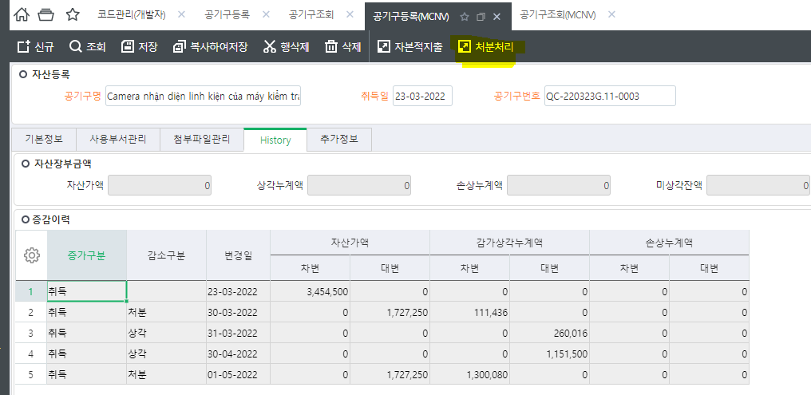
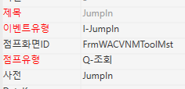
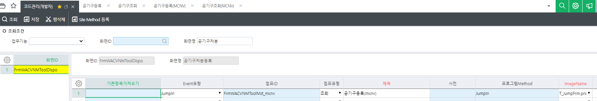

JumpIn 화면 바꾸기

처분처리 툴바 클릭 시 => 공기구처분등록 화면으로 이동함
=> 표준이기 때문에 JumpIn의 점프화면ID가 표준으로 되어있었음

코드관리 - Jump등록 => 만든 화면으로 JumpIn되도록 수정


처분처리 툴바 클릭 시 => 공기구처분등록 화면으로 이동함
=> 표준이기 때문에 JumpIn의 점프화면ID가 표준으로 되어있었음

코드관리 - Jump등록 => 만든 화면으로 JumpIn되도록 수정
